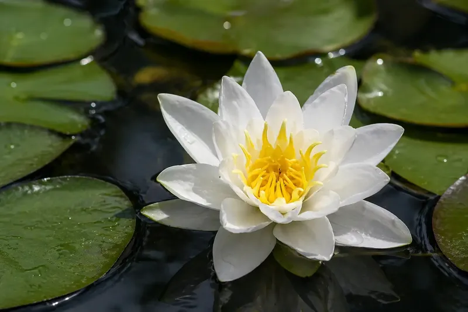

Растения для пруда
Нимфея “Марлиацея Альбида”
Цена и наличие
- C2-C530 BYN / шт.В наличии
Данные на 23.11.2026.
Характеристики
- Размер сорта
- Средний
- Глубина посадки
- 30-80 см
- Диаметр цветка
- 10-15 см
- Диаметр покрытия воды
- 1-1,2 м
- Тип корневища
- Rhizome
Описание
Нимфея ‘Марлиацеа Альбида’ (Nymphaea ‘Marliacea Albida’), он же Марлиака Альбида — старинный, классический сорт зимостойкой водяной лилии, выведенный во Франции в XIX веке знаменитым селекционером Жозефом Бори де Латур-Марлиаком.
Нимфея ‘Марлиацеа Альбида’ (Nymphaea ‘Marliacea Albida’), он же Марлиака Альбида — старинный, классический сорт зимостойкой водяной лилии, выведенный во Франции в XIX веке знаменитым селекционером Жозефом Бори де Латур-Марлиаком. Это одна из первых гибридных белых нимфей, ставшая основой для многих последующих сортов. Цветки крупные, диаметром около 10–15 см, снежно-белые, с лёгким кремовым или лимонным оттенком в центре, особенно заметным при ярком солнечном свете. Лепестки широкие, слегка заострённые, аккуратно расположены в плотной чаше, придавая цветку классическую, строгую форму. Центр украшен ярко-жёлтыми тычинками, создающими выразительный контраст. Цветки плавают на поверхности воды и источают лёгкий, едва уловимый аромат. Цветение обильное и продолжительное, с начала лета до осени, особенно при наличии достаточного солнечного освещения. Листья округлые, тёмно-зелёные, плавающие, иногда с коричневатым налётом у молодых листьев, образуют плотный зелёный покров. Диаметр покрытия воды достигает 1–1,2 метра, что делает сорт пригодным для средних и крупных водоёмов. Глубина посадки — от 30 до 80 см. Корневая система — классическая ризома, устойчивая к зимним условиям, при этом растение способно зимовать прямо в пруду при условии, что корневище не подвергается промерзанию. Благодаря своей устойчивости, неприхотливости и чистоте окраса, нимфея ‘Марлиацеа Альбида’ долгое время была эталоном среди белых сортов и остаётся актуальной для оформления водоёмов в классическом стиле.